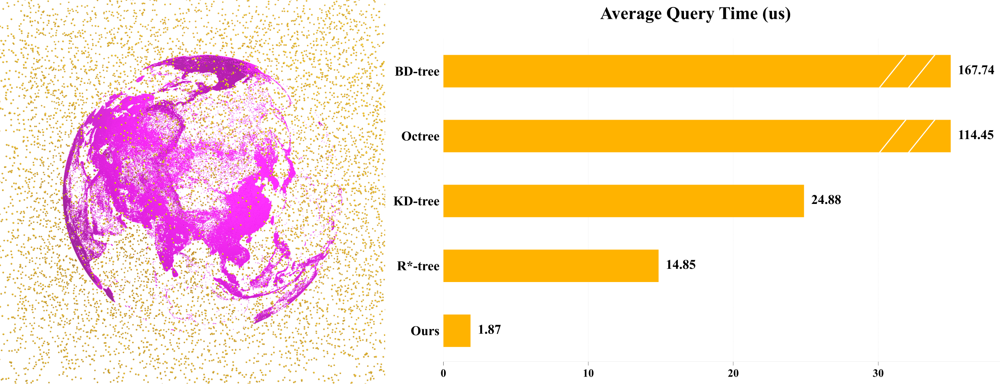
Manifold k-NN: Accelerated k-NN Queries for Manifold Point Clouds
Accelerates nearest-neighbor queries on manifold point clouds through geometry-aware search.
ACM Transactions on Graphics (TOG) · ACM SIGGRAPH 2026, Journal Track
Research spanning geometric computing, intelligent design, manufacturability analysis, and computational fabrication. (Haisen Zhao is highlighted in each author list. * Corresponding author.)

Accelerates nearest-neighbor queries on manifold point clouds through geometry-aware search.
ACM Transactions on Graphics (TOG) · ACM SIGGRAPH 2026, Journal Track
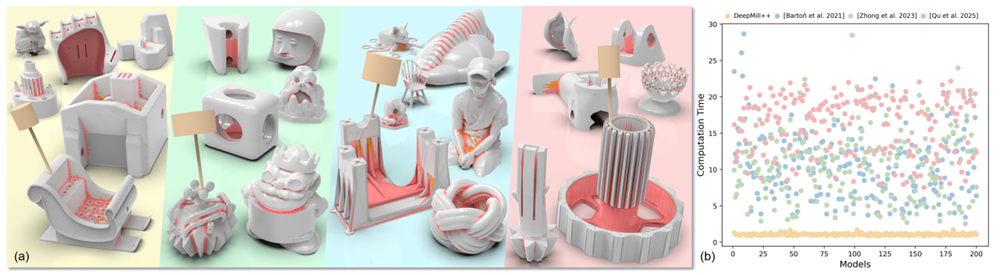
Combines neural guidance with rasterization for efficient tool-accessibility analysis in subtractive manufacturing.
ACM SIGGRAPH 2026 · Conference Track
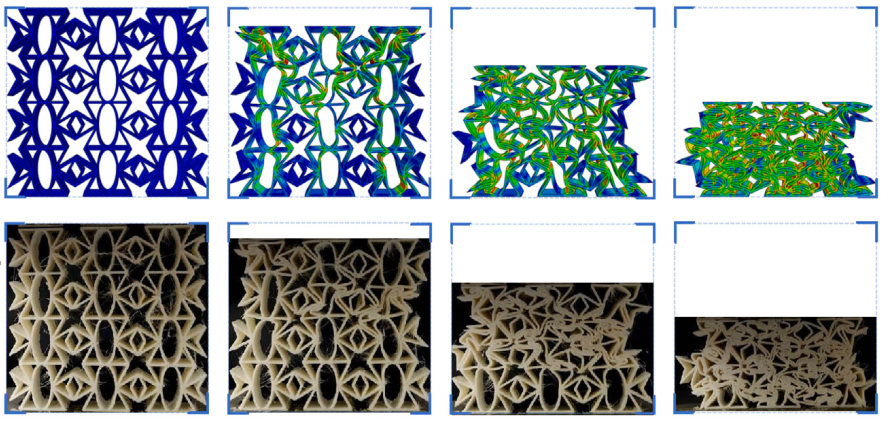
Introduces an elliptical double-arrow hybrid re-entrant honeycomb to improve structural energy absorption.
Thin-Walled Structures, 2026
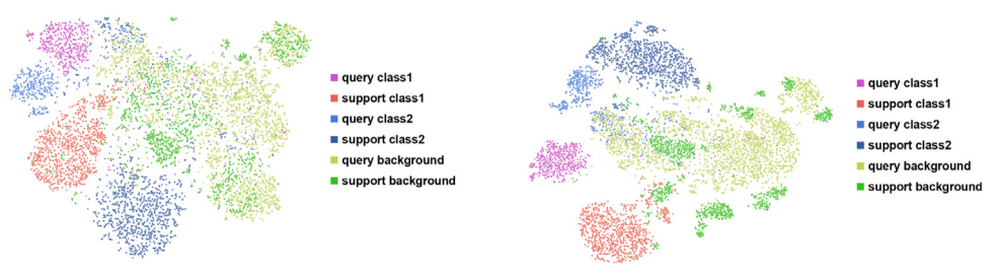
Combines rich local features and cross-scale fusion for few-shot semantic segmentation of point clouds.
Engineering Applications of Artificial Intelligence, 2026
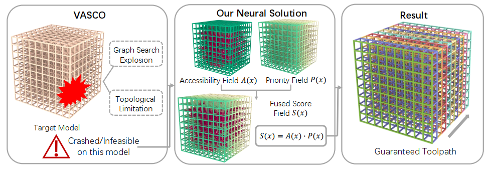
Uses neural fields to represent geometry and plan additive-subtractive manufacturing sequences.
Eurographics Symposium on Geometry Processing (SGP) 2026 · Poster Track
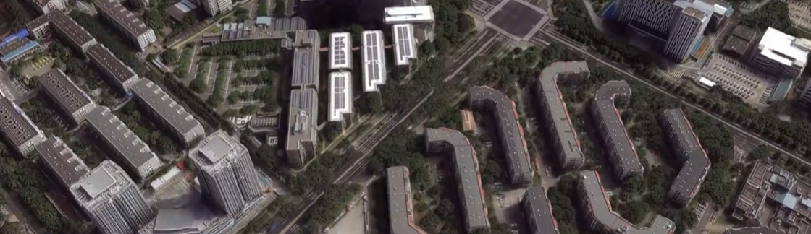
Generates city-scale photogrammetric reconstructions from extreme off-nadir satellite imagery.
CVPR 2026 · Findings
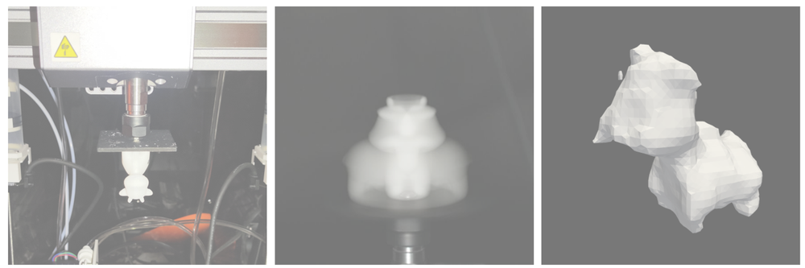
Recovers 3D geometry from images degraded by ultra-fast motion blur.
3DV 2026
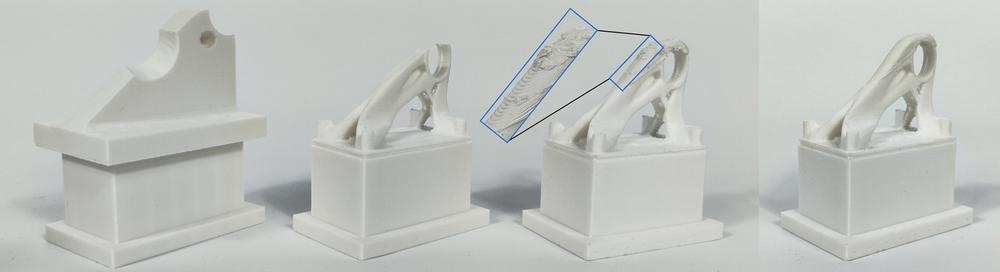
Plans additive-subtractive remanufacturing while maximizing the reuse of existing material.
ACM Transactions on Graphics (TOG) · ACM SIGGRAPH Asia 2025, Journal Track
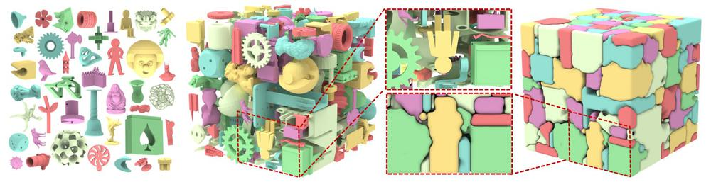
Jointly decomposes and packs shapes into carvable hulls for efficient subtractive manufacturing.
ACM Transactions on Graphics (TOG) · ACM SIGGRAPH Asia 2025, Journal Track
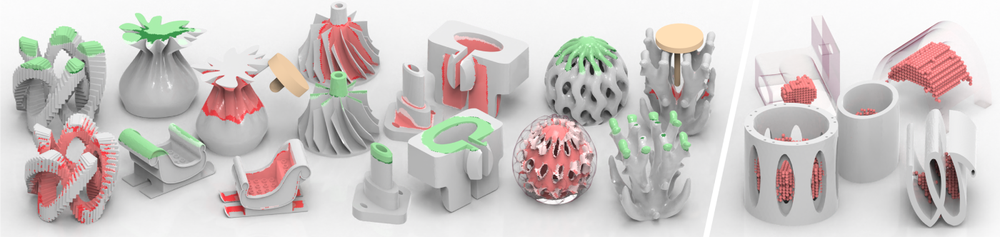
Learns tool accessibility to efficiently analyze manufacturability for subtractive processes.
ACM SIGGRAPH 2025 · Conference Track
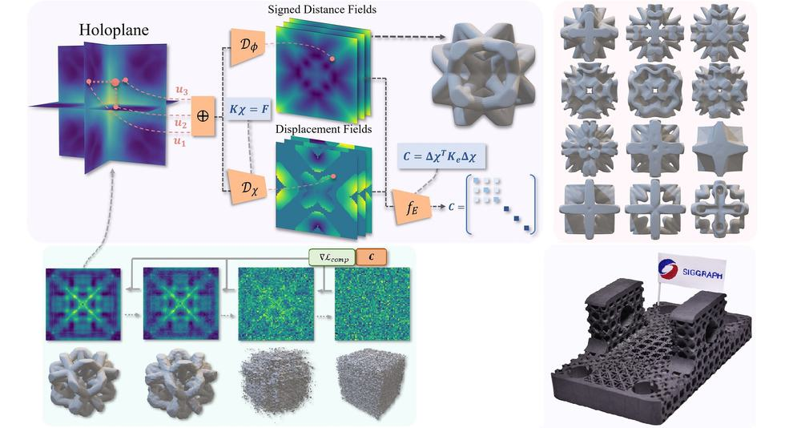
Uses a generative hybrid neural representation for performance-driven inverse design of microstructures.
ACM SIGGRAPH 2025 · Conference Track
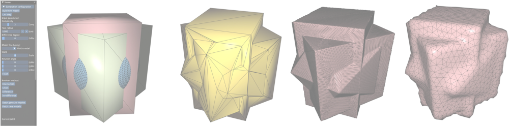
Provides a large 3D model dataset for learning and evaluating hybrid manufacturing process plans.
Journal of Computer-Aided Design & Computer Graphics, 2025 · In Chinese
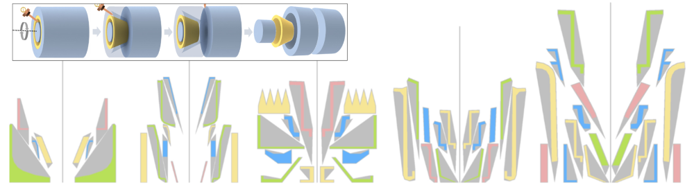
Packs revolved objects while accounting for the geometric constraints of subtractive manufacturing.
Graphical Models, 2025 · Special Issue: Add-and-Sub Manufacturing
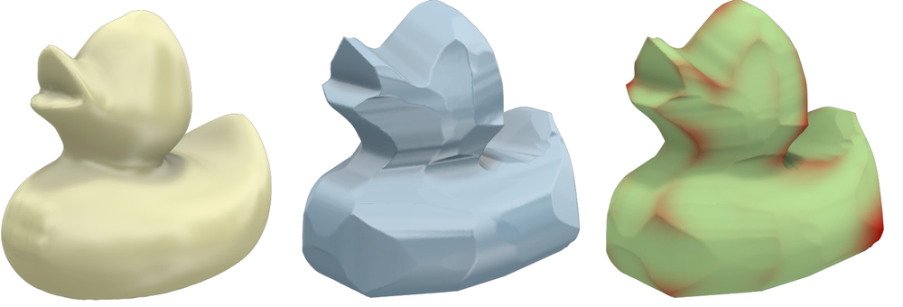
Plans ruled-surface carving operations for efficient rough machining of complex shapes.
Computers & Graphics, 2025
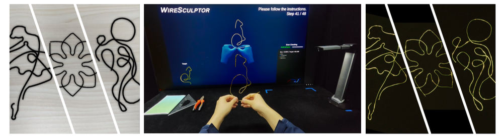
Provides an interactive guided workflow that helps novices fabricate wire sculptures by bending.
ICXR 2025
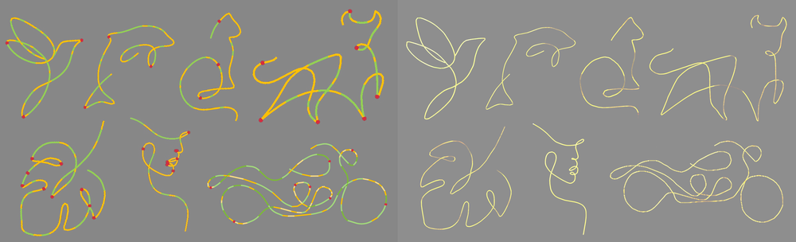
Optimizes wire reconfiguration sequences for efficient sculpture manufacturing.
ACM SIGGRAPH Asia 2024 · Conference Track
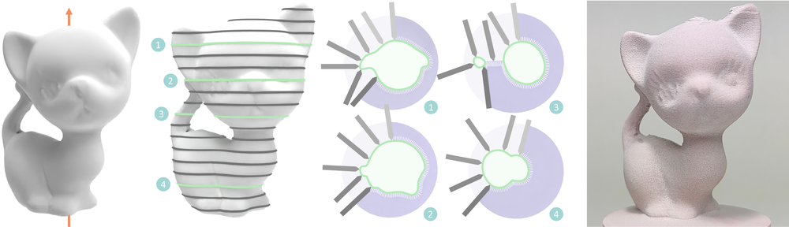
Optimizes continuous toolpaths for efficient and high-quality simultaneous four-axis machining.
Computer Graphics Forum, 2024
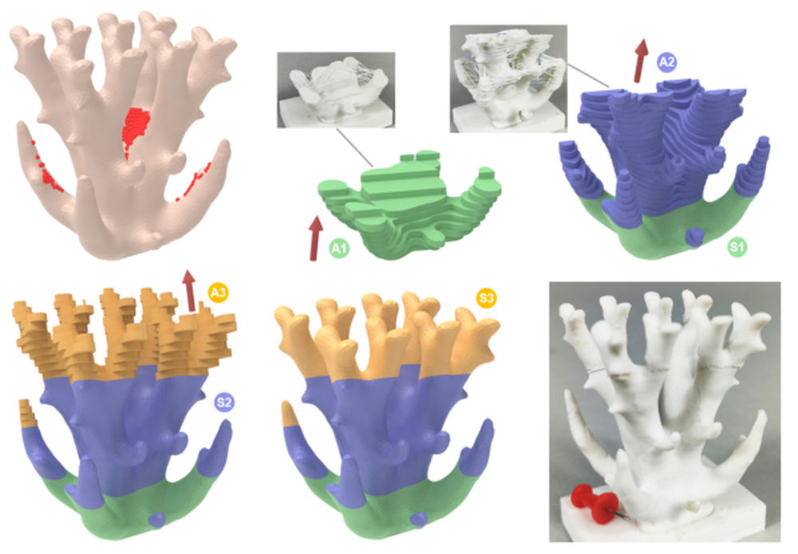
Co-decomposes volume and surface to plan additive-subtractive hybrid manufacturing.
ACM Transactions on Graphics (TOG) · ACM SIGGRAPH Asia 2023, Journal Track
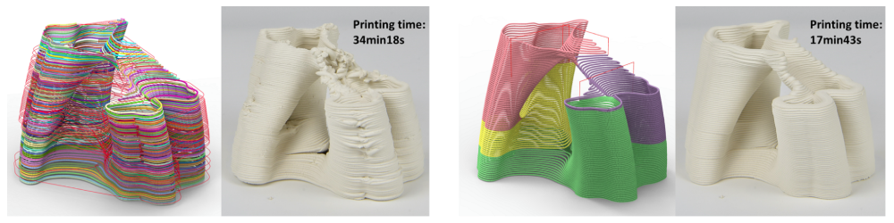
Generates nearly continuous extrusion paths for fabricating surface models.
ACM Transactions on Graphics (TOG) · Presented at ACM SIGGRAPH 2023
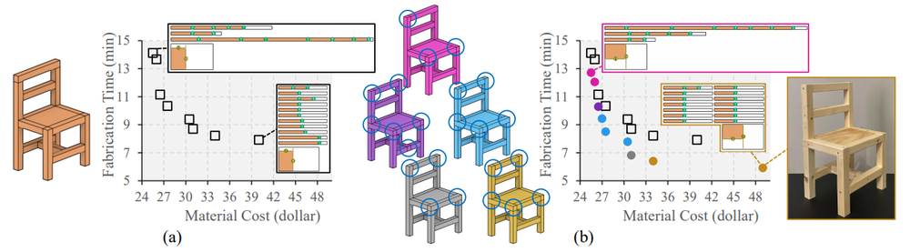
Couples structural design, assembly layout, and fabrication planning for carpentry-aware construction.
ACM Transactions on Graphics (TOG) · Presented at ACM SIGGRAPH 2022
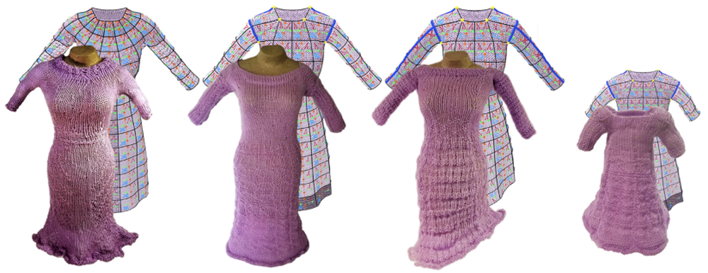
Computes fabrication-ready knit templates for producing target shapes.
ACM Transactions on Graphics (TOG) · Presented at ACM SIGGRAPH 2022
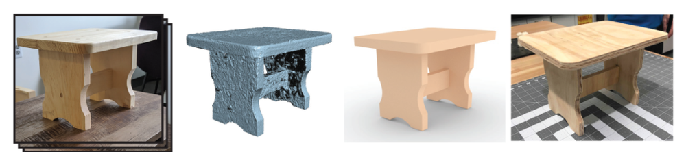
Reconstructs carpentry designs from geometry while respecting fabrication and assembly constraints.
Computer Graphics Forum · SGP 2021
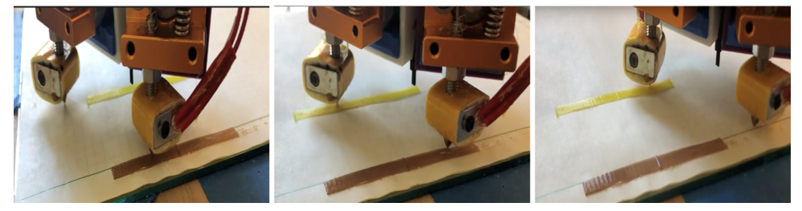
Explores coordinated parallel-printing strategies for multiple desktop 3D printers.
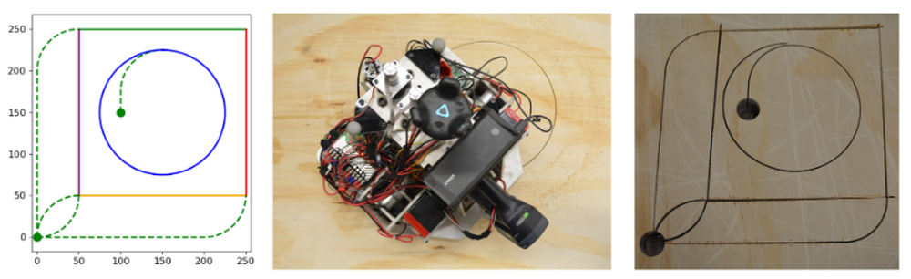
Combines a non-holonomic cutting robot with path planning for autonomous jigsaw fabrication.
IEEE IROS 2021
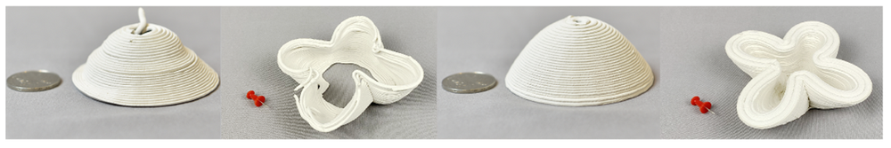
Computes printable shell thickening for extrusion-based ceramic fabrication.
Computers & Graphics · CAD & Graphics 2021
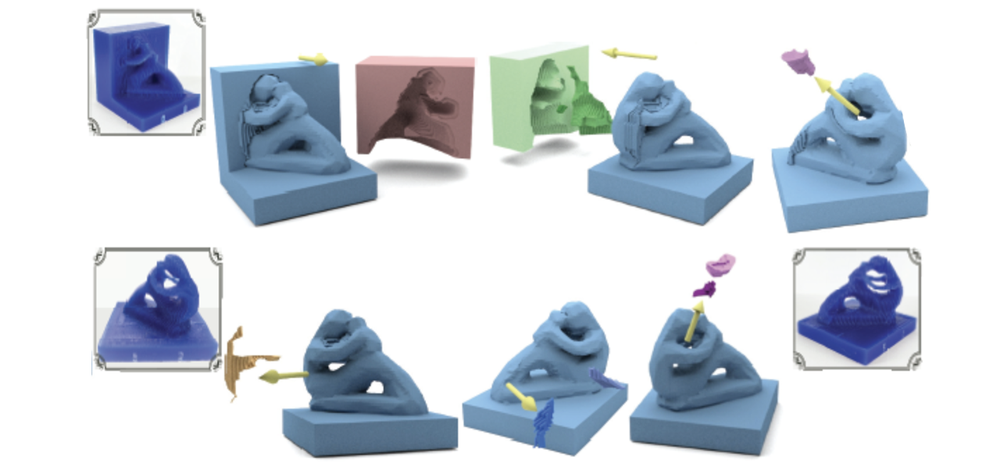
Decomposes volumes into carvable parts and plans their subtractive fabrication.
ACM Transactions on Graphics (TOG) · ACM SIGGRAPH Asia 2020
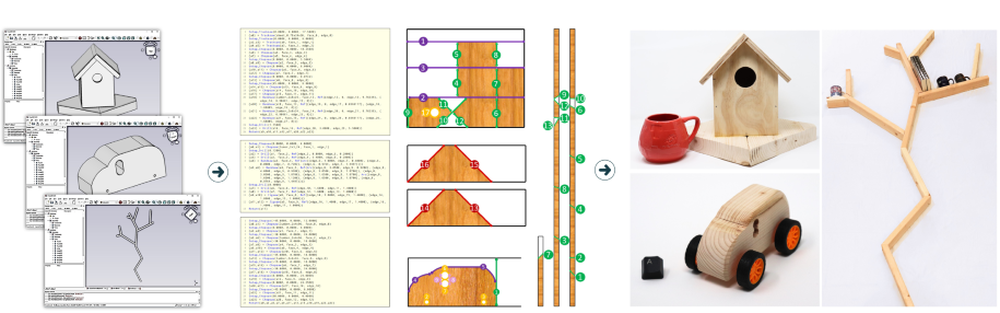
Compiles high-level carpentry designs into fabrication and assembly plans.
ACM Transactions on Graphics (TOG) · ACM SIGGRAPH Asia 2019
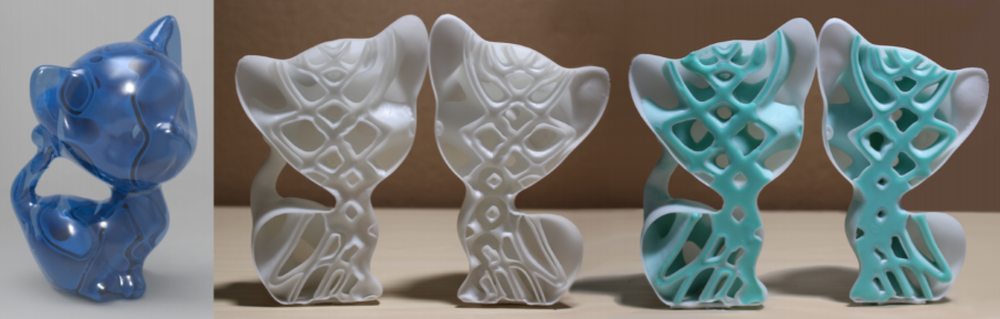
Strengthens printed structures by injecting triply periodic minimal-surface microstructures.
IEEE Transactions on Visualization and Computer Graphics (TVCG), 2019
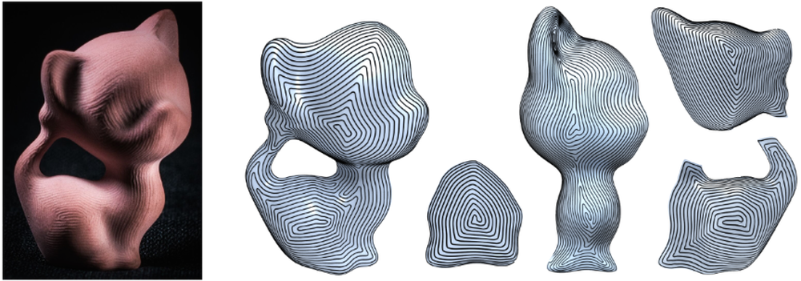
Decomposes shapes and generates spiral carving paths for subtractive manufacturing.
ACM Transactions on Graphics (TOG) · ACM SIGGRAPH 2018
Studies geometric algorithms for additive and subtractive manufacturing applications.
Ph.D. Thesis, Shandong University, 2018 · In Chinese · CCF Outstanding Doctoral Dissertation Award 2019
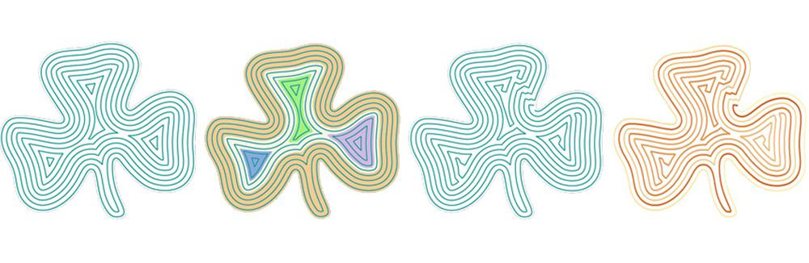
Generates connected, low-curvature spiral paths for continuous layered fabrication.
ACM Transactions on Graphics (TOG) · ACM SIGGRAPH 2016
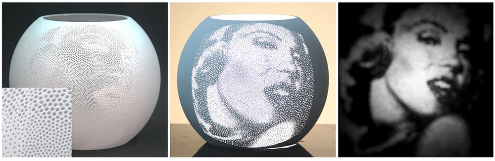
Designs perforated lampshades whose projected light forms continuous images.
ACM Transactions on Graphics (TOG) · Presented at ACM SIGGRAPH 2016
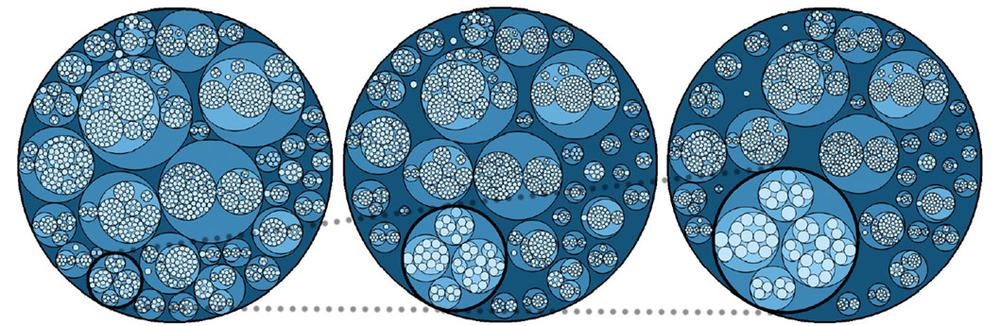
Optimizes circular treemap layouts for clear visualization of hierarchical data.
Journal of Software · PacificVis 2015 · In Chinese
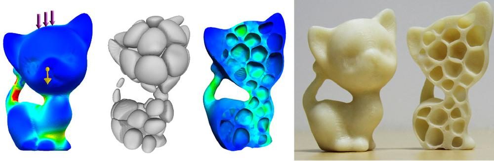
Optimizes internal structures to improve the strength-to-weight ratio of 3D printed objects.
ACM Transactions on Graphics (TOG) · ACM SIGGRAPH 2014
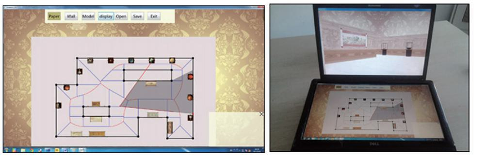
Computes point visibility using geometric relationships derived from Voronoi diagrams.
Journal of Computer-Aided Design & Computer Graphics · CAD/CG 2012, Best Student Paper · In Chinese